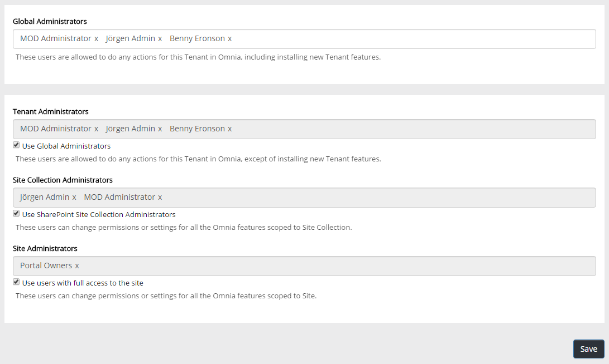

Here you can set administrators on several levels, for your Omnia tenant.

Note the descriptions for each group of administrators.
For tenant administrators, site collection administrators and site administrators, you can choose to use the global administrators, or set administrators separetaly.